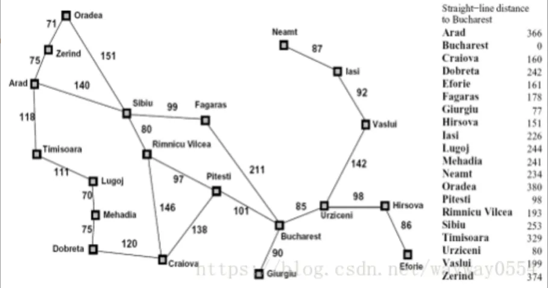
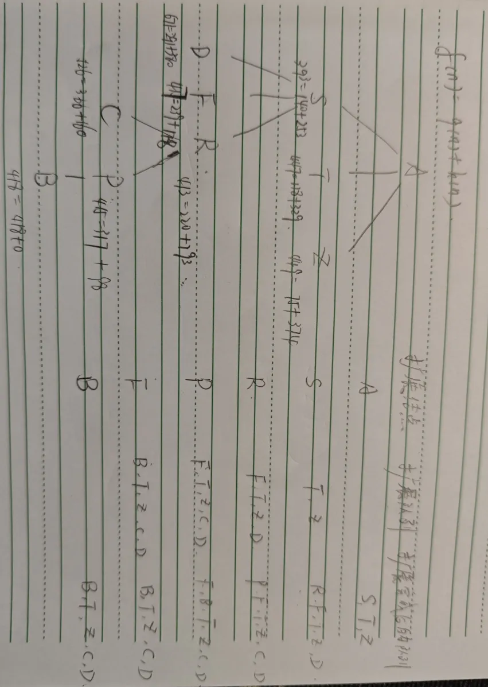
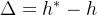
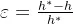
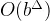
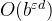

实验1--A*搜索算法求解罗马尼亚问题
一、实验目的
二、相关知识-A*搜索
A*搜索
- 算法介绍
A*算法常用于 二维地图路径规划，算法所采用的启发式搜索可以利用实际问题所具备的启发式信息来指导搜索，从而减少搜索范围，控制搜索规模，降低实际问题的复杂度。
- 算法原理：
A*算法的原理是设计一个代价估计函数：其中 **评估函数F(n)**是从起始节点通过节点n的到达目标节点的最小代价路径的估计值，函数G(n)是从起始节点到n节点的已走过路径的实际代价，函数H(n)是从n节点到目标节点可能的最优路径的估计代价 。
函数 H(n)表明了算法使用的启发信息，它来源于人们对路径规划问题的认识，依赖某种经验估计。根据 F(n)可以计算出当前节点的代价，并可以对下一次能够到达的节点进行评估。
采用每次搜索都找到代价值最小的点再继续往外搜索的过程，一步一步找到最优路径。
三、实验内容及步骤
题目：罗马尼亚问题
agent在罗马尼亚度假，目前位于 Arad 城市。agent明天有航班从Bucharest 起飞，不能改签退票。
现在你需要寻找到 Bucharest 的最短路径，在右侧编辑器补充void A_star(int goal,node &src,Graph &graph)函数，使用编写的搜索算法代码求解罗马尼亚问题：

预期输出：
solution: 0-> 15-> 14-> 13-> 1-> end
cost:418
1.创建搜索树
给每个城市编号：
1 | |
根据启发式函数 f(n)=g(n)+h(n)，我们用直线距离表示每个城市到终点的预计代价，存储到数组 h 中。
1 | |
我们定义了节点结构体 node，用于表示图中的每个节点，其中包括节点名称 name，实际代价 g，启发式代价 h，以及总代价 f。总代价 f 是启发式代价和实际代价的和，用于 A* 算法中的优先级排序。
1 | |
然后是 Graph 类，用于表示图，其中包括一个邻接矩阵来存储节点之间的边的权重。这里使用了一个 20x20 的邻接矩阵，表示 20 个城市之间的关系。
1 | |
最后，print_result 函数用于打印最终结果，包括路径和总代价。
1 | |
2.实现A*搜索算法
- 初始化：
- 开始时，将起始节点放入开放列表 openList 中，然后按照节点的总代价 f 进行排序。
- 初始化闭合列表 closeList 和标记列表 list。
- 搜索过程：
- 在每一轮循环中，从开放列表中选择总代价最小的节点进行扩展，即取出开放列表中的第一个节点 n。
- 如果节点 n 是目标节点，则搜索结束。
- 将节点 n 标记为已扩展，并从开放列表中移除。
- 遍历节点 n 的邻居节点：
- 如果邻居节点已经在闭合列表中，则跳过。
- 计算从起始节点经过节点 n 到邻居节点的总代价。
- 如果邻居节点已经在开放列表中：
- 如果新路径的代价比原路径的代价更小，则更新邻居节点的代价和父节点，并重新计算总代价。
- 如果邻居节点不在开放列表中：
- 创建一个新的节点表示新路径，将其加入到开放列表中，并更新父节点和标记列表。
- 在每轮循环结束时，重新对开放列表按总代价进行排序，以确保下一轮选择的节点总代价最小。
- 搜索结束：
- 当搜索到达目标节点时，返回结果。
- 可以根据父节点信息回溯路径，并计算总代价。解空间树：
1
2
3
4
5
6
7
8
9
10
11
12
13
14
15
16
17
18
19
20
21
22
23
24
25
26
27
28
29
30
31
32
33
34
35
36
37
38
39
40
41
42void A_star(int goal,node &src,Graph &graph)
{
openList.push_back(src); //起点入队
sort(openList.begin(), openList.end());
while (!openList.empty())//队列中还有可扩展节点，就不断扩展
{
/********** Begin **********/
node n=openList[0];
if(n.name==goal) return; //扩展节点是目标节点，搜索结束
openList.erase(openList.begin());
closeList[n.name]=1; //当前节点已扩展
list[n.name]=0; //当前节点出队
for(int i=0;i<20;i++){
if(graph.getEdge(n.name,i)!=-1 && closeList[i]!=1){
int cost=n.g+graph.getEdge(n.name,i);//到下一个城市的代价
if(list[i]){
//更新已有节点
for(int j=0;j<openList.size();j++){
if(openList[j].name==i){
if(openList[j].g>cost){
openList[j].g=cost;
openList[j].f=cost+openList[j].h;
parent[i]=n.name;
}
break;
}
}
}
else{
//构造新节点
node newNode(i,cost,h[i]);
openList.push_back(newNode);
list[i]=1;
parent[i]=n.name;
}
}
}
sort(openList.begin(),openList.end());
/********** End **********/
}
}

3.使用编写的搜索算法代码求解罗马尼亚问题

4.分析算法的时间复杂度
启发式函数的的绝对误差定义为，其中 h是从根节点到目标节点的实际代价，相对误差定义为。
A的时间复杂度在最大绝对误差下是指数级的，为，考虑每步代价均为常量，其中 d 是解所在深度。
四、思考题
1.几种搜索算法最优性的比较
宽度优先搜索，深度优先搜索，一致代价搜索，迭代加深的深度优先搜索算法哪种方法最优？
ε每步行动代价都相等时，宽度优先搜索和迭代加深的深度优先搜索最优，否则一致搜索代价算法最优
宽度优先算法：
- 完备性：在最浅的目标处于有限深度时是完备的；
- 最优性：路径代价基于结点深度的非递减函数时才是最优的，最典型的就是行动代价相等的情况；
- 迭代加深的深度优先搜索类似，且二者时间复杂度与空间复杂度也相同。
一致代价搜索：最优的；
- 扩展路径消耗最小的结点，由于代价非负，第一个被扩展的目标结点一定是最优解。
- 但可能会探索代价小的行动的搜索树，开销更大。
2.贪婪最佳优先搜索和A*搜索那种方法最优？
A*搜索算法是最优的。
3.分析比较无信息搜索策略和有信息搜索策略
无信息搜索策略：
- 缺点：盲目的搜索，可能需要较大的时间开销和空间开销才能找到解；
- 优点：具有好的通用性。
有信息搜索策略：
五、代码汇总
1 | |